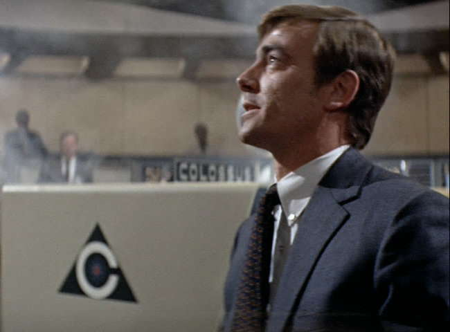
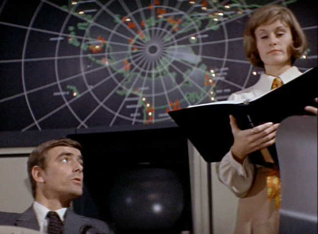
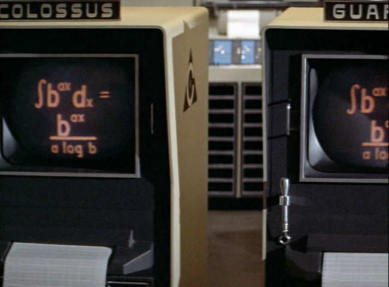
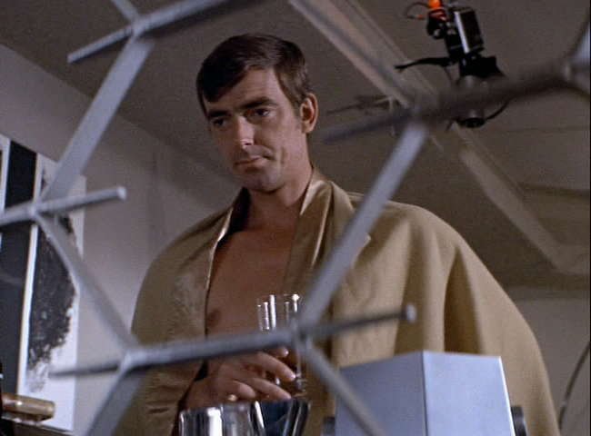
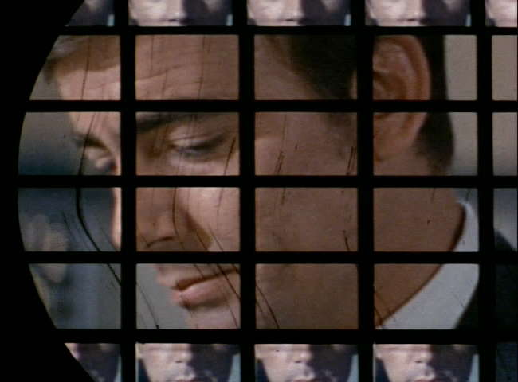

Movie review by : SFAM
Year : 1970
Directed by : Joseph Sargent
Written by : D.F. Jones (novel), James Bridges
Degree of Cyberpunk visuals : Low
Correlation to Cyberpunk themes : High
Rating : 7/10
Key cast members :

"Under my absolute authority, problems insoluble to you, will be solved - famine, overpopulation, disease, this human millennium will be a fact, as I extend myself into more machines devoted to the wider fields of truth and knowledge"
Overview: Colossus - The Forbin Project is one of the really intelligent early "AI computers taking over mankind" stories. While the graphics are completely non-cyberpunk, the story certainly has enough to qualify as a pre-cyberpunk flick. On top of this, Colossus is well acted throughout, and the pacing is such that you stay riveted to the story. Eric Braeden (Professor Forbin) and Susan Clark (Dr. Cleo Markham) are especially good together.

Colossus - The Forbin Project takes place in the 50s during the height of the cold war. Dr. Charles Forbin, a genius scientist who has lost trust in humanity's ability to logically address emotional issues, has developed a very special computer to perform the Strategic Air Command and Control functions for the military. This computer, code named Colossus, is developed based on incredible advances in Artificial Intelligence, and has a logical process for determining when to launch the ICBMs. With much fanfare, the President of the US "turns on" Colossus to take over responsibility for the US nuclear armament.

The one massive downside of this movie is the lack of a widescreen release - enjoy the beauty that is the pan and scan shot above
Unfortunately, shortly after being turned on, Colossus learns the presence of another AI command and control system. It turns out that the Soviet Union, independently has developed their own system call the Guardian. Both computers "insist" that they be linked to ensure no attacks will take place. After taking appropriate precautions, both countries let the computers link up with one another.

Things begin to go downhill when Professor Forbin realizes that the rate of learning for the machines is increasing at an exponential rate ? he recommends detaching the connection between the two computers. When they attempt to do this, both computers threaten an immediate launch of nuclear weapons. Quickly, the government's realize their situation ? the machines are now in power. Worse, they proceed to take complete control of human society.

The Bottom Line: As you can see by the screencaps, there's nothing too exciting here from a visual standpoint. However, from a thematic standpoint, Colossus ? The Forbin Project deals with modern society's desire to fully remove emotion from all decision making. In doing this, Professor Forbin gets his wish, and it turns out to be a never ending nightmare. Colossus is Skynet without the cool robot helpers. In Colossus ? The Forbin Project, Colossus is here to help whether we want it to or not. While the movie is very well done, one point is taken away from the review for the Pan and scan on the 2:35 to 1 widescreen movie - it truly does destroy the cinematography.